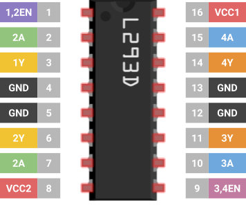

Capstone Project
RC Rover
By Colton Kaneria

Introduction
In this final project, you will create a remote-controlled rover. First, you will design a PCB layout for the remote control and send the CAD files for manufacturing. Then, you will assemble and program the rover. The last step is to solder the components to your custom PCB upon its arrival. The Capstone will require knowledge of everything taught up until this point. From circuit design to soldering, you will have free reign in building this project. It will only need to meet the base requirements; the rest is up to you.
Parts
| Part Name | Qty |
|---|---|
| Breadboard | 1 |
| 9V Battery | 1 |
| JST PH2.0 Female Connector | 1 |
| JST PH2.0 Snap 9V Battery Male Connector | 1 |
| Dupont Jumper Wire (Male-to-Female) | 7 |
| N4F24L01 Transceiver Module | 2 |
| Gearbox Motor | 2 |
| Wheel | 2 |
| Ball Caster | 1 |
| Metal Ball | 1 |
| Long Screw | 2 |
| Hex Nut | 2 |
| Ball Caster Chassis Grip | 1 |
| 4”x4” Wood Plate (Chassis) | 1 |
| 9V Battery Holder | 1 |
| L293D Quadruple Half-H Driver IC | 1 |
| Diode | 1 |
| Mini USB Cable | 1 |
| Analog Joystick | 1 |
| 1x5 Pin Female Header(Bent) | 1 |
| 2x4 Pin Female Header | 1 |
| 1x15 Pin Female Header | 2 |
| Jumper Wire | ? |
| Positive Attitude | 1 |
Schematics

Installing Arduino Libraries
Here is a quick recap on how you can install Arduino libraries in the Arduino IDE 2.0.0+
- Download the library as a .zip
- In the Arduino IDE, go to Sketch → Include Library → Add .ZIP Library…
- Select the .zip of the library and click Open.

You're done! Just make sure to #include the library header
file so that your
code compiles.
Installing KiCad 7.0
To complete this project, you will download the PCB design software KiCad (version 7.0.11).
| Windows | Download |
| Mac | Download |
- Download the installer from the link appropriate to your OS.
-
Launch the installer. Click Next.

-
When the Choose Components dialog appears, make sure all but the “Help files”
components are selected. Then, click Next.

-
Select the Install Location. The default setting is usually acceptable. Then,
click Install.

- The installation is complete! The fun starts now.
Analog Joystick
The remote control will accept input via an analog joystick. The component outputs analog signals that the Arduino board will read and process. Much like a console controller, the joystick has two axes, horizontal and vertical. The degree to which the joystick has pivoted along these axes determines the output of its data lines.

Joystick Pinout
To the left is the pinout of the joystick. The GND and +5V pins power the radio module.
Make sure they are connected appropriately to the Arduino board.
The next two pins are VX and VY, which carry analog signals for
the horizontal and vertical position of the joystick, respectively. These pins must be connected to analog pins on the Arduino
board.
The last pin is SW. The joystick may act as a button/switch, the digital signal of which
is carried by SW. This pin should be connected to a digital pin on the Arduino.
Wiring the Joystick to the Arduino
The following connections are recommended, so the PCB design procedure is easier to follow. In the end, you can wire the joystick however you like as long as the PCB layout reflects your design choices.
| Joystick Pins | Arduino Nano Pins |
|---|---|
| GND | GND |
| +5V | 5V |
| VX | A0 |
| VY | A1 |
| SW | D2 |
Pull-Up Resistors
Suppose you use a digital input pin on the Arduino board, but it’s not connected to anything. Is the state of the pin HIGH or LOW?
For it to be HIGH, the pin would need to be connected to the VCC power source. For the state to be LOW, the pin would need to be
connected to GND. When the state is indeterminate like this, the pin is said to have a floating signal, which we should avoid.
The solution is what we call a pull-up resistor. The input pin is connected to a high-value resistor R1 whose other terminal
is attached to VCC (as depicted below).
The intent is to set the input pin to the HIGH voltage. We often use a 10kΩ resistor to do so because it drives the current down low
(recall V=IR). Now, the input pin has an effective resistance in the range of 100 MΩ. That’s right: mega-ohms.

The resistance of the pull-up resistor R1 and effective resistance of the input pin divide the voltage VCC such that the voltage at the input pin is equal to VCC (HIGH).
Now, let’s introduce the button: one terminal attached to the input pin and the other GND.
When the button is pressed, the voltage at the input pin is shorted to GND (LOW).
With this circuit, the input pin will either be VCC or GND (HIGH or LOW).
When you use a button or, in our case, the SW pin of the joystick, you should use a pull-up resistor.
Instead of building an external circuit, you can use an internal pull-up resistor in the Arduino board. You may do so by setting
the pin mode as follows:
pinMode(pin, INPUT_PULLUP);
There are also pull-down resistors, which we will not discuss here.
L293D Quadruple Half-H Driver
We will use an L293D chip to drive the two DC motors of the rover. The H-bridge should be familiar to you. This time, the L293D will do the heavy lifting. Within this IC are two H-bridges, making it possible to drive two motors bidirectionally.
Reading the Big Scary Manual
This time around, we will not thoroughly discuss the driver’s operation. You will have to read the datasheet, and figure it out yourself.
L293D Quadruple Half-H Driver Datasheet.pdf
Skim through the datasheet to familiarize yourself with the documentation. Some items you may recognize but the vast majority you may not.
This is okay!
Pay close attention to pages 3, 7, and 11-12. These pages will help you the most in understanding the functions of the IC.
As you read, here are some things to note:
- The documentation refers to both the L293 and L293D, only the latter of which we will use. This version of the chip contains flyback diodes.
- Of the several system examples, we will use the Bidirectional DC Motor Control.
- The term “logic” refers to the binary HIGH and LOW output of the Arduino digital pins.
L293D Pinout
Below you will find a pinout of the chip. Initially, it will seem overwhelming, but it will make more sense as you navigate the datasheet.

Ensure that the Arduino board and L293D share a ground connection.
As you will learn in the datasheet, 1EN and 2EN are enable pins, which you will
need to set to HIGH to control the driver channels. Note that if you apply a PWM signal to these pins, you can control the speed of their respective
channels.
NRF24L01 Transceiver Module
The NRF24 radio transceiver is a popular choice for wireless communication between microcontroller boards. We’ll use the NRF24L01 variation, which is a low-power, high-frequency radio module.
Here’s how we’ll transmit data: The Arduino board will transfer messages to and from the radio module using SPI protocol, and the radio module will handle the rest. It uses a radio protocol called Enhanced ShockBurst™ (ESB) to transmit wirelessly to another NRF24. The beauty of it all is that we don’t need to know how ESB protocol works; we just need to get the data from the Arduino to the radio module.
Radio Frequency Bands and Channels
Remember that the NRF24 modules send information over radio waves, just like our mobile phones, satellites, and WiFi. But how do the radio waves emitted by a satellite not interfere with the radio waves of a WiFi router or iPhone? Let’s explain: Each signal belongs to a frequency band or range of contiguous frequencies specified by the International Telecommunication Union (ITU).

FM radio is designated to a frequency band of 88-108 MHz, and WiFi exists in 2.4 GHz and 5 GHz bands. These bands are further divided into channels.
For example, FM radio has 100 channels, each with a different radio frequency within the larger frequency band. FM radio stations are assigned to unique channels, which is why you normally don’t hear Taylor Swift overlaid with the latest stock market report.
If multiple radio signals were to exist on the same frequency, a collision would occur. This is why the ITU takes special care to regulate the radio spectrum.
The NRF24L01 operates on a 2.4 GHz frequency band, which it shares with WiFi. This band is subdivided into 125 channels from which we choose to emit a signal. You will have to manually select a channel for the two radio modules to operate on. Moreover, this channel will have to be different from any nearby pair of NRF24 modules to avoid collisions.
NRF24L01 Pinout
Below, you’ll find a pinout of the NRF24L01. You should recognize some of the pins as the SPI protocol lines (i.e., CE/CS, PICO, POCI, SCK).

The GND and VCC pins power the radio module. Make sure that VCC is connected to a 3.3V power source rather than 5V. Unlike other components we use, the NRF24 accepts only 3.3V power, which is an increasingly common voltage in modern digital circuits. Luckily, the module still tolerates 5V logic, meaning we can connect the other pins to the Arduino’s digital pins as we normally would.
The CSN pin is the “Chip Select Not” pin, which disables SPI communication when HIGH. When we want the radio module to listen for SPI messages, the pin is set to LOW.
Last but not least is the IRQ pin for interrupts, which we will not use in this project. Make sure the IRQ pin is left disconnected.
Wiring the Arduino to the Radio Module
Just like I2C, the Arduino is designed to handle SPI communication through certain pins on the board, which connect to the NRF24 as follows.
| NRF24L01 Pins | Arduino Nano Pins |
|---|---|
| GND | GND |
| VCC | 3.3V |
| CE/CS | D7 |
| CSN | D8 |
| SCK | D13 |
| PICO | D11 |
| POCI | D12 |
| IRQ | None |
Using the NRF24L01_W Library
Once you wire the Arduino board to the radio module, it’s time to write code! Download the
library
here.
Make sure to include the header file:
#include <NRF24L01_W.h>
You will instantiate a global object of the NRF24L01_W class, which represents the radio connected to the Arduino board. The two arguments of the constructor are the CS and CSN pins of the board.
NRF24L01_W radio(int CS, int CSN);
The next steps are to configure your newly created radio object. Place this code in your setup() function.
radio.begin();
You will set the address of your radio to a five
character string and pass it into the radio's setReceiveAddress() function.
For example, you could set the address to "B1440”.
Make sure the address is unique.
radio.setReceiveAddress(char[] address);
Now, enter the address of the radio to which you intend to transmit messages.
radio.setTransmitAddress(char[] address);
You will also set the channel that your radios will operate on. Pick one at random in the range of 0-124. Make sure that both NRF24 modules are set to the same channel.
radio.setChannel(int channel);
Let’s move on to the code that would appear in the main() loop. This is where radio messages will be
read and written (transmitted and received).
To facilitate the data transfer, you are provided with a special container RemoteData with three member variables that are
initialized as follows.
These are the uint8_t (unsigned 8-bit int) type.
RemoteData data;
data.vx = 77;
data.vy = 89;
data.sw = 1;
To send a report to the other radio, use the write() function, passing the
RemoteData container as an argument.
radio.write(RemoteData data);
You may check to see if the radio has incoming data with the following function, which returns
an int greater than zero
if there is data available.
int payload = radio.available();
To read incoming data, use the radio’s read()
function, which returns a RemoteData
RemoteData data = radio.read();
Arduino Nano Pinout
Thinking about using a pin but you don't know what it does? Refer to the Arduino Nano pinout diagram, or scroll further to find the full datasheet.
~ represents pins that are PWM capable.

Requirements
In order to receive full marks on your project submission, make sure it meets the following requirements. Beyond this, you can do whatever you like.
- You must build a rover and a remote control.
- The rover must be controlled wirelessly via the remote control.
- The remote control should use a joystick for user input.
- A user should be able to intuitively use the joystick to control the rover. This means that pivoting the joystick left should move the rover left, not backward.
-
You must design a PCB for the remote control.
- The PCB must adhere to the provided manufacturer constraints.
- The PCB must be less than 100x100 mm in size.
- The rover must be able to move forward, backward, left, and right in response to commands sent by the remote.
Lastly, the rover must be stable and reliable. There should be no spontaneous movement, no wireless connection issues, and absolutely no sparks.
Procedure
PCB Design
-
Open KiCad 7.0 and create a new project.
- Name the project file using the following format: “capstone_firstname_lastname.kicad_pro”.
-
Create Schematic A in the project’s schematic editor.
- You must use the symbols and corresponding footprints listed below:
-
Symbol: Arduino_Nano_v3.x
Footprint Library: Module
Footprint: Arduino_Nano -
Symbol: Conn_01x05_Female or Conn_01x05_Socket
Footprint Library: Connector_PinSocket_2.54mm
Footprint: PinSocket_1x05_P2.54mm_Vertical
-
Symbol: NRF24L01_Breakout
Footprint Library: RF_Module
Footprint: nRF24L01_Breakout
- Note that we do not use a symbol for the joystick. Instead, we use a 1x5 female header. You must observe the physical pinout of the joystick and make sure it matches the pin wiring of the header in your KiCad schematic.
-
Before proceeding to the next step, make sure that you have done the following:
-
Run the Annotate Schematic tool.

-
Run the Electrical Rules Checker (ERC) tool.

- There should be no violations except for Error: Input Power pin not driven by any Output Power pins.
- Make sure every symbol is assigned to the correct footprint.
-
Run the Annotate Schematic tool.
- Download this file. You will use it to import the manufacturer’s PCB constraints to your project.
- Open the PCB Editor. Go to File → Board Setup…
- In the Board Setup menu, select Import Settings From another Board…
- Import from the file JLCPCB1ozExample.kicad_pcb
- Select all checkboxes except Net classes then click Import Settings.
- Exit the Board Setup Menu.
-
In the PCB Editor, click Update PCB or press F8.

- Complete the layout and traces for your PCB design.
-
Before submitting your design, make sure you have done the following:
- Place the 01x05 female header (for the joystick) along the edge of your PCB. The joystick needs to be attached off the edge of the board.
-
Run Design Rules Checker (DRC) tool.
- There should be no violations.
- Submit your PCB design based on the instructions in section 14 | Deliverables
PCB Assembly
- Place the headers on your newly manufactured PCB. Remember that you are not soldering the actual components to the board, just the headers.
- Solder the headers to the PCB.
- Place the components on the headers. Viola! You are done.
Rover Assembly
You may customize the rover however you like, but it does need to work. Just in case, we offer instructions on how to build it.
-
Collect the listed components, all of which are displayed below:
- Breadboard
- 9V Battery Holder
- 9V Battery
- 9V Battery Snap Connector with Dupont Terminals or JST Female Snap Connector with Male JST Header
-
Ball Caster Components (You may have a pre-assembled ball caster components in your kit…
In which case, ignore the following.)
- Ball Caster Chassis Grip
- Ball Caster
- Metal Ball
- Long Screws (2)
- Hex Nuts (2)
- Wheels (2)
- 4”x4” Wood Plate (Chassis)
- Gearbox Motors (2)

-
Adhere the 9V battery holder to one face of the wood plate. Center the battery holder along the edge of the plate.
Make sure the open side of the battery holder is on the edge of the wood plate.
Hot Tip: Use a glue gun
-
Adhere the two gearbox motors to the wood plate so that they sit on either side of the battery holder.

-
If you have pre-assembled ball caster components, ignore this step: Using the long screws and hex nuts, fasten
the black ball caster to the chassis grip. To do so…
- Place the hex nuts in the hexagonal hole inside the clip.
- Feed the screws through the caster’s holes and the holes at the bottom of the grip.
- Tighten the screws until the hex nuts “catch” them and the ball caster is tightly bound.


-
Clip the chassis grip to the edge of the plate opposite to the battery holder. Center align the chassis grip
along the edge as well.

-
Attach the wheels to the gearbox motors, the metal ball to the caster, and the 9V battery to the battery holder.
Note that the battery slides into the holder as shown below.

-
Attach the wheels to the gearbox motors, the metal ball to the caster, and the 9V battery to the battery holder.
Note that the battery slides into the holder as shown below.

-
The final step is to place and wire the electrical components on the breadboard. Remember that there is no
schematic. You have to design the circuit yourself.
Try drawing up your own schematic on Tinkercad first. You can use all the same components and even simulate your circuit with code!
If you get stuck, ask questions.
Programming
How you write the code is all up to you. Just make sure there are two files, one for the rover and one for the remote control.
Install the newest version of the NRF24L01_W library as well.
As a final suggestion, look back at your old project submissions and reuse applicable code.
References
- NRF24L01 Datasheet.pdf
- L293D Quadruple Half-H Driver Datasheet.pdf
- Arduino Nano Datasheet.pdf
- Resistor Color Code Chart.pdf
- NRF245L01_W Library
Deliverables
PCB Design
Compress the KiCad project folder as a .zip. It must contain the following:
- KiCad Project File (.kicad_pro)
- KiCad PCB File (.kicad_pcb)
- KiCad Schematic File (.kicad_sch)
Then, submit the .zip file to the Capstone PCB Design Canvas assignment. Make sure that the file name follows the format: “capstone_firstname_lastname.zip”
Final Submission
Place the following files in a single Google Drive folder:
-
Video of your rover and the remote control
The video should include a demonstration of the rover moving forward, backward, left, and right. Make sure to show the remote as well.
-
Rover Arduino sketch file
This file should include all of the code you have written for the rover. Name it “capstone_rover.ino”.
-
Remote Control Arduino sketch file
This file should include all of the code you have written for the remote control. Name it “capstone_remote.ino”.
Then, submit the shareable folder link to the Capstone Final Submission Canvas assignment. Make sure that the folder link is accessible to Anyone with the link or the University of California, Irvine.